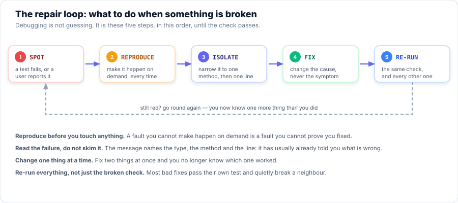

Session 6 — Try It Yourself: Sessions 1–5
You now know how to store data (Collections), keep it type-safe (Generics), save it (I/O Streams),
run jobs at the same time (Threading) and share data safely (Concurrency). Today you find out
whether you can read all of that — because reading code you did not write is
most of the job. You will debug seven real faults, work the Try It Yourself questions
from Sessions 1–5, and repair a class that is broken in five different ways until its
self-check reports 5 passed, 0 failed.
- Choose between a
List, aSet, aQueueand aMapby naming the job in English first. - Apply PECS — and explain why
? extendsrefuses anadd()while? superallows it. - Use try-with-resources so every reader and writer is closed on every path out of the method.
- Distinguish
start()fromrun(), and useisAlive()andjoin()to follow a thread's life. - Identify a race condition, and choose between an atomic class and
synchronizedfor the fix. - Debug broken code from a failure report, working the loop spot → reproduce → isolate → fix → re-run.
- Repair a class with five planted faults, and prove it with a self-check that moves from
0 passed, 5 failedto5 passed, 0 failed. - Explain why a deadlock needs a circular wait, and prevent one by agreeing on a single lock order.
- Check an AI's explanation of a bug against the evidence — the message, the output and the code — before you act on it.
Your Roadmap for Today
Why This Matters
Nobody is paid to write new code all day. Professional developers spend most of their time reading code they did not write — and working out why it is doing the wrong thing. The faults in this session are not exotic: every one of them is a Sessions 1–5 mistake wearing ordinary clothes, and every one of them produces output that looks fine.
That last part is the reason this session exists. A crash is a gift: it tells you where to look. A wrong answer with a clean exit tells you nothing, and it is what reaches the customer. Finding those is a skill, and like every skill in this course it is built by doing it, not by reading about it.
SelfCheck is for.
Part 1 of 3 Debugging Drills
Seven faults, one from each corner of Sessions 1–5 and two extra from the concurrency material. Name the fault before you run anything — that is the exercise. Then run it and check yourself: every program below is real, and the output under each one is what it actually printed.


Figure 2 — the loop every fix in this session follows.
Drill 1 — The Forgotten Customer
The office writes three names into a HashSet and gets three customers back. There are only two.
private static void broken() {
Set<String> names = new HashSet<>();
names.add("Alice");
names.add("Bob");
names.add("alice");
System.out.println("BROKEN - added Alice, Bob, alice with no normalising");
System.out.println(" unique names = " + names.size());
System.out.println(" the set holds " + new TreeSet<>(names));
System.out.println(" ...but Alice and alice are the same customer.");
}💡 See the Bug & Fix
The Bug: a HashSet decides "have I seen this already?" with hashCode() and equals(). For a String those compare the characters one by one, so "Alice" and "alice" are not equal and do not share a bucket. Case is part of the value, always — the set is not broken, it is answering the question it was asked.
The Fix: agree a normal form and apply it on the way in. And notice the trap in the fix: a lookup has to be normalised the same way, or contains() starts lying to you.
private static void fixed() {
Set<String> names = new HashSet<>();
names.add("Alice".toLowerCase());
names.add("Bob".toLowerCase());
names.add("alice".toLowerCase());
System.out.println("FIXED - normalise every name on the way in");
System.out.println(" unique names = " + names.size());
System.out.println(" the set holds " + new TreeSet<>(names));
System.out.println(" worth knowing: the LOOKUP must be normalised too");
System.out.println(" names.contains(\"ALICE\") -> " + names.contains("ALICE"));
System.out.println(" names.contains(\"ALICE\".toLowerCase()) -> " + names.contains("ALICE".toLowerCase()));
System.out.println(" (the first lies: the set stores 'alice'. Normalise the lookup the same way.)");
}Drill 2 — The Basket That Refuses the Apple
This one does not even start. It is a compile error, which is the best kind: the compiler found it before a customer did.
public class Drill2_Broken {
static class Fruit { }
static class Apple extends Fruit { }
/** "Give me a basket of fruit" - and then tries to put an apple in it. */
static void addApple(List<? extends Fruit> basket) {
basket.add(new Apple()); // <-- javac refuses this line
}
}Compiling it produces exactly this:
💡 See the Bug & Fix
The Bug: ? extends Fruit promises only that everything in the basket is a Fruit. It does not promise what the basket can hold: the caller may have passed a List<Banana>. Adding an apple to a banana basket is a category error, so the compiler refuses rather than discovering it at runtime.
The Fix: match the wildcard to the direction you need. Producer Extends, Consumer Super — reads take extends, writes take super.
/**
* PRODUCER — reads every fruit out of the basket and hands them to the caller.
* Accepts List<Fruit>, List<Apple>, List<Banana> ... any subtype.
*/
static String readBasket(List<? extends Fruit> basket) {
StringBuilder sb = new StringBuilder();
for (Fruit fruit : basket) {
sb.append(fruit).append(' ');
}
return sb.toString().trim();
}
/**
* CONSUMER — puts an apple into the basket.
* Accepts List<Apple>, List<Fruit>, List<Object> ... any supertype.
*/
static void addApple(List<? super Apple> basket) {
basket.add(new Apple());
}Drill 3 — The Report Nobody Received
The method writes a line and returns. No exception. The file is empty. This one runs, so you can watch it happen.
private static void broken() throws Exception {
Path file = SANDBOX.resolve("drill3_leaky.log");
FileWriter writer = new FileWriter(file.toFile());
writer.write("first line of the log");
writer.write(System.lineSeparator());
// ...and the method ends here. No close(). No flush(). No try-with-resources.
String readBack = Files.readString(file);💡 See the Bug & Fix
The Bug: FileWriter is buffered. write() means "I have taken your text", not "your text is on disk". Only close() — which flushes first — gets it there. And the file handle stays open the whole time, which is the leak.
The Fix: try-with-resources. It calls close() on the way out of the block, including when an exception is thrown, which is the path a hand-written close() in the happy case always gets wrong.
private static void fixed() throws Exception {
Path file = SANDBOX.resolve("drill3_fixed.log");
try (FileWriter writer = new FileWriter(file.toFile())) {
writer.write("first line of the log");
writer.write(System.lineSeparator());
} // close() runs here - automatically, even if the block throws
String readBack = Files.readString(file);
System.out.println("FIXED - try-with-resources closes it for you");
System.out.println(" size on disk now: " + Files.size(file) + " bytes");
System.out.println(" reading it back gives \"" + readBack.replace("\n", "").replace("\r", "") + "\"");
System.out.println(" -> close() flushed the buffer and released the handle.");
}Drill 4 — The Frozen Kitchen
Four cooks, four ovens' worth of work, and one lock. Nothing crashes. It is just slow — four times too slow.
/** BROKEN: takes the lock, then sleeps while still holding it. */
static void slow() throws InterruptedException {
synchronized (OVEN) {
Thread.sleep(BAKE_MS); // the lock is held for the whole 300 ms
finished++;
}
}
/** FIXED: does the slow work first, then locks only to update the shared count. */
static void fast() throws InterruptedException {
Thread.sleep(BAKE_MS); // out here nobody is blocked by it
synchronized (OVEN) {
finished++; // locked for microseconds, which is all it needs
}
}The two numbers above are measured on the machine that built this page, so yours will differ — the gap between them will not.
💡 See the Bug & Fix
The Bug: Thread.sleep() does not release the lock it is called under. The lock was doing its job perfectly — it was simply asked to protect 300 ms of doing nothing, so every other cook queued behind the sleeper and four independent jobs ran one after another.
The Fix: do the slow work first, then lock only the few lines that touch the shared value. A lock protects data, not time.
Note which fix this is not: wait() is not a substitute for sleep(). wait() releases the lock, but it also requires the lock, demands a while loop against spurious wake-ups, and needs somebody to call notifyAll(). If you only needed to pass time, none of that is what you wanted.
Drill 5 — The Standoff
Two chefs, two utensils, two different orders of picking them up. This fault is different from the others: it does not end. The program below would hang forever, so it carries its own watchdog — the JVM can see a deadlock even though it cannot break one.
private static void cook(String chef, String first, Object firstLock,
String second, Object secondLock) {
System.out.println(chef + " picks up the " + first + ".");
synchronized (firstLock) {
sleep(300); // gives the other chef time to pick up the other utensil
System.out.println(chef + " now needs the " + second + " ...");
synchronized (secondLock) {
System.out.println(chef + " is cooking.");
}
}
System.out.println(chef + " puts everything down.");
}💡 See the Bug & Fix
The Bug: a deadlock needs a circular wait. Ada holds the pot and wants the spoon; Ben holds the spoon and wants the pot. Neither will ever let go, so neither will ever move — and nothing is thrown, because from the JVM's point of view both threads are doing exactly what they were told.
The Fix: one agreed order, followed everywhere. Both chefs name the pot first, so whoever gets it simply finishes and the other waits at the first lock instead of being stuck at the second. One rule, and a cycle becomes impossible.
public static void main(String[] args) throws InterruptedException {
System.out.println("Drill 5b - one agreed lock order (pot first, always)");
System.out.println();
// Both chefs name the pot first, even though Ben wants the spoon.
Thread ada = new Thread(() -> cook("Chef Ada", "pot", POT, "spoon", SPOON), "Chef Ada");
Thread ben = new Thread(() -> cook("Chef Ben", "pot", POT, "spoon", SPOON), "Chef Ben");
ada.start();
ben.start();
ada.join();
ben.join();
System.out.println();
System.out.println("Both chefs finished and the program ended on its own.");
System.out.println("One order, followed everywhere, and a circular wait cannot form.");The rule only works if every method obeys it. One method that grabs the spoon first reintroduces the cycle for the whole program.
Drill 6 — The Duplicate That Will Not Go Away
Two copies of the same student go into a Set and stay there. The set is behaving correctly; the student class is not.
/** A student with NO equals()/hashCode(): two objects, two identities. */
static final class BadStudent {
final String id;
final String name;
BadStudent(String id, String name) {
this.id = id;
this.name = name;
}
@Override public String toString() {
return id + " " + name;
}
}💡 See the Bug & Fix
The Bug: with no equals(), a class inherits identity comparison from Object — "is this the same object in memory?", not "is this the same student?". With no hashCode() the two objects usually land in different buckets, so equals() is not even consulted. The HashMap line shows the same fault wearing a different hat: it cannot find the value it just stored.
The Fix: honour the contract. equals() decides what "the same" means, hashCode() must agree with it. Note which field this course treats as identity — the id, not the name — because that is a business decision, not a Java one.
@Override public boolean equals(Object other) {
if (this == other) {
return true;
}
if (!(other instanceof GoodStudent that)) {
return false;
}
return id.equals(that.id);
}
/** Must agree with equals(): the same field, in the same way. */
@Override public int hashCode() {
return Objects.hash(id);
}Drill 7 — The Interrupt Nobody Heard
A worker is asked to stop. It carries on to the end of its list and reports success. This is how Cancel buttons quietly stop working.
private static int run(boolean swallow) throws InterruptedException {
final int[] completed = {0};
Thread worker = new Thread(() -> {
for (int step = 1; step <= STEPS; step++) {
try {
Thread.sleep(STEP_MS);
} catch (InterruptedException e) {
if (!swallow) {
Thread.currentThread().interrupt(); // FIXED: keep the flag, then leave
return;
}
// BROKEN: swallow it and carry on as though nothing happened
}
completed[0] = step;
}
}, "worker");
worker.start();
Thread.sleep(STOP_AFTER_MS); // let it get going
worker.interrupt(); // "please stop"
worker.join(5000); // join() gives us a happens-before edge, so the read below is safe
return completed[0];
}💡 See the Bug & Fix
The Bug: catching InterruptedException clears the interrupt flag. If you catch it and do nothing, you have thrown away the only signal the thread had, and interrupt() becomes a no-op — the worker runs to the end of its list as though nobody had spoken.
The Fix: do not swallow it. Either give up what you were doing and return, or restore the flag with Thread.currentThread().interrupt() and let your caller decide. The fixed half above stops at the next step boundary; a stop request is a request, not a command, which is why the exact step count varies but the early exit does not.
This is also the honest answer to "how do I stop a thread?" in a viva: you ask, with interrupt(), and the thread cooperates. Thread.stop() is deprecated precisely because it does not.
Part 2 of 3 Try It Yourself (Sessions 1–5)
One practical task per book session. Each one is small deliberately — the point is the choice you make before you type, not the number of lines. Try it first; the hint is there if you need it, and the solution is hidden below the hint. Every solution on this page is the real, compiled, run program.
1. Utility APIs — name the job, then pick the shape
Three jobs: a sign-in register where each student counts once, a photocopier queue where whoever arrived first goes first, and a gradebook you look up by student id. Write the three of them and print the results.
💡 Hint
Say the job out loud before you choose. "Counts once" is a Set. "First come, first served" is a Queue. "Find a value by its key" is a Map. Everything else is a List.
Two follow-ups worth knowing: a LinkedHashSet refuses duplicates and keeps arrival order, and getOrDefault() lets you say what happens when a key is missing instead of getting null back.
✅ Solution
package com.aptech.s06.tyi;
import java.util.ArrayDeque;
import java.util.HashMap;
import java.util.LinkedHashSet;
import java.util.Map;
import java.util.Queue;
import java.util.Set;
/**
* TRY IT YOURSELF 1 — Sessions 1: Utility APIs and the Collection framework.
*
* Three everyday jobs, and the one collection shape that actually fits each of them.
* The skill being tested is not "can you call add()" — it is choosing the right shape
* before you write a line of it.
*
* 1. a sign-in register -> each student counts once -> Set
* 2. a photocopier queue -> first come, first served -> Queue
* 3. grades by student id -> find a value by its key -> Map
*/
public class T1_Collections {
public static void main(String[] args) {
System.out.println("Try It Yourself 1 - choosing the collection");
// 1. Every student who signed in today. A second sign-in is not a second student.
// LinkedHashSet: no duplicates, and it keeps the order they arrived in.
Set<String> signedIn = new LinkedHashSet<>();
signedIn.add("S-1001");
signedIn.add("S-1002");
signedIn.add("S-1001"); // signed in again after lunch
System.out.println("1. sign-in register : " + signedIn
+ " (" + signedIn.size() + " distinct students)");
// 2. The photocopier. Whoever put their work down first goes first.
Queue<String> copier = new ArrayDeque<>();
copier.add("Ada");
copier.add("Ben");
copier.add("Chioma");
StringBuilder order = new StringBuilder();
while (!copier.isEmpty()) {
order.append(copier.poll());
if (!copier.isEmpty()) {
order.append(" -> ");
}
}
System.out.println("2. photocopier order : " + order);
// 3. Grades, looked up by student id. A HashMap is a lookup table, not a list.
Map<String, String> grades = new HashMap<>();
grades.put("S-1001", "A");
grades.put("S-1002", "B+");
System.out.println("3. grade for S-1002 : " + grades.get("S-1002"));
System.out.println(" grade for S-9999 : " + grades.getOrDefault("S-9999", "not on the register")
+ " (get() would hand you null - say what you want instead)");
System.out.println();
System.out.println("The rule: name the job in English first. Unique -> Set. Waiting -> Queue.");
System.out.println("Look up by something -> Map. Everything else -> List.");
}
}2. Generics — one method that reads, one that writes
Write a method that totals a list of numbers whatever kind of number they are, and a second method that adds integers into a list. Both signatures have to accept more than one concrete type.
💡 Hint
Reading is the producer: List<? extends Number>. Writing is the consumer: List<? super Integer>.
The trap is writing List<Number> for the first one. It looks more natural and it rejects a List<Integer> — which is the entire reason wildcards exist. Inside the reader, use n.doubleValue() rather than casting, and you will accept every subtype without a single cast.
✅ Solution
package com.aptech.s06.tyi;
import java.util.ArrayList;
import java.util.List;
/**
* TRY IT YOURSELF 2 — Session 2: Generics and wildcards.
*
* Write one method that only READS from a list of numbers (so it must accept any subtype of
* Number) and one that only WRITES integers into a list (so it must accept any supertype).
*
* List<? extends Number> -> PRODUCER. You may read. Total them, print them, copy them out.
* List<? super Integer> -> CONSUMER. You may add. The compiler can prove the add is safe.
*
* The trap to avoid: writing `List<Number>` for the first one. That rejects a
* List<Integer>, which is the whole reason wildcards exist.
*/
public class T2_Generics {
/** PRODUCER: accepts List<Integer>, List<Double>, List<Long>, List<Number> ... */
static double total(List<? extends Number> numbers) {
double sum = 0;
for (Number n : numbers) {
sum += n.doubleValue(); // reading is always safe: every element IS a Number
}
return sum;
}
/** CONSUMER: accepts List<Integer>, List<Number>, List<Object> ... */
static void addAll(List<? super Integer> target, int... values) {
for (int value : values) {
target.add(value); // writing is always safe: everything here IS an Integer
}
}
public static void main(String[] args) {
List<Integer> marks = List.of(70, 85, 62);
List<Double> prices = List.of(19.99, 4.50);
List<Long> views = List.of(1_200L, 340L);
System.out.println("Try It Yourself 2 - PECS in two method signatures");
System.out.println();
System.out.println("Reading - one method, three different list types:");
System.out.printf(" List<Integer> marks total = %.2f%n", total(marks));
System.out.printf(" List<Double> prices total = %.2f%n", total(prices));
System.out.printf(" List<Long> views total = %.2f%n", total(views));
System.out.println(" a List<Number> parameter would have refused all three.");
System.out.println();
List<Number> sink = new ArrayList<>();
addAll(sink, 10, 20, 30);
System.out.println("Writing - one method, fills a List<Number>:");
System.out.println(" sink is now " + sink);
List<Object> objects = new ArrayList<>();
addAll(objects, 7);
System.out.println(" the same method also fills a List<Object>: " + objects);
System.out.println();
System.out.println("PECS: Producer Extends, Consumer Super. If your method reads, use extends.");
System.out.println("If it writes, use super. If it does both, do not use a wildcard at all.");
}
}3. Files & Streams — copy a text file, line by line
Write a small CSV file, then copy it line by line into a second file. Two skills are being tested: text needs Readers and Writers, not streams; and both resources must be closed on every path out of the method.
💡 Hint
BufferedReader gives you readLine(); BufferedWriter gives you newLine(), which writes the correct separator for the operating system you happen to be on.
Open both in one try-with-resources with a semicolon between them. If you open them in two separate blocks, the reader is closed a moment too late when the writer throws, and you have a leak again.
✅ Solution
package com.aptech.s06.tyi;
import java.io.BufferedReader;
import java.io.BufferedWriter;
import java.io.IOException;
import java.nio.file.Files;
import java.nio.file.Path;
import java.util.List;
/**
* TRY IT YOURSELF 3 — Session 3: File handling, streams and serialization.
*
* Copy a small CSV file line by line. The skills being tested are the two that break most
* often in student code:
*
* 1. Reader/Writer for TEXT (characters). InputStream/OutputStream are for raw bytes.
* Use the wrong family on a text file and you get mojibake, not an error.
* 2. Both resources opened inside ONE try-with-resources, so both are closed on every
* path out of the method — including the exception path.
*
* The files are written into sandbox/, which is never published to GitHub.
*/
public class T3_FileCopy {
private static final Path SANDBOX = Path.of("sandbox");
public static void main(String[] args) throws IOException {
Files.createDirectories(SANDBOX);
Path source = SANDBOX.resolve("t3-attendance.csv");
Path copy = SANDBOX.resolve("t3-attendance-copy.csv");
Files.write(source, List.of(
"S-1001,Ada,90",
"S-1002,Ben,75",
"S-1003,Chioma,88"));
copyText(source, copy);
List<String> lines = Files.readAllLines(copy);
System.out.println("Try It Yourself 3 - copy a text file, line by line");
System.out.println(" source : " + source + " (" + Files.size(source) + " bytes)");
System.out.println(" copy : " + copy + " (" + Files.size(copy) + " bytes)");
System.out.println(" lines copied: " + lines.size());
for (String line : lines) {
System.out.println(" " + line);
}
System.out.println();
System.out.println("Copy closed both resources itself - there is no finally block anywhere,");
System.out.println("and the file handles are released even if readLine() throws.");
}
/** Copies text with BufferedReader -> BufferedWriter, both closed automatically. */
static void copyText(Path from, Path to) throws IOException {
try (BufferedReader reader = Files.newBufferedReader(from);
BufferedWriter writer = Files.newBufferedWriter(to)) {
String line;
while ((line = reader.readLine()) != null) {
writer.write(line);
writer.newLine(); // newLine() writes the correct separator for this OS
}
}
}
}4. Threading — three named workers, followed from birth to death
Start three named workers that each take a different amount of time. Report how many are running
before they start, immediately after, and after join(). The report must not
print before the workers have finished.
💡 Hint
A thread that has not been started is not alive, and neither is one that has finished. isAlive() answers exactly one question: "running right now?"
start() branches into a new thread; run() is an ordinary method call that does the work on the calling thread — same output, no concurrency, and the classic mistake. join() is what stops main printing its report early.
The punchline to look for: three jobs of 200, 400 and 600 ms finish in about 600 ms, not 1200 — the total is the slowest job, not the sum.
✅ Solution
public static void main(String[] args) throws InterruptedException {
String[] jobs = {"roster", "timetable", "fees"};
Thread[] workers = new Thread[jobs.length];
for (int i = 0; i < jobs.length; i++) {
String job = jobs[i];
int workMs = 200 * (i + 1); // roster 200 ms, timetable 400 ms, fees 600 ms
workers[i] = new Thread(() -> {
sleep(workMs);
System.out.println(" finished: " + job
+ " (on thread " + Thread.currentThread().getName() + ")");
}, "worker-" + job);
}
System.out.println("Try It Yourself 4 - three named workers");
System.out.println("before start(), alive = " + countAlive(workers) + " of " + workers.length
+ " (a thread that has not started is not alive)");
for (Thread worker : workers) {
worker.start();
}
System.out.println("straight after start(), alive = " + countAlive(workers)
+ " of " + workers.length);
long start = System.currentTimeMillis();
for (Thread worker : workers) {
worker.join(); // wait here until this one has finished
}
long took = System.currentTimeMillis() - start;
System.out.println("after join(), alive = " + countAlive(workers) + " of " + workers.length);
System.out.println();
System.out.println("All three ran at the same time: the whole batch took about " + took
+ " ms,");
System.out.println("which is the time of the SLOWEST job (600 ms), not the sum of all three.");
}5. Concurrency — take a racy tally and prove you fixed it
Four chefs each add one to a shared tally a hundred thousand times. The tally is wrong, and it is a different wrong number every run. Fix it with the right tool for one hot counter, and prove it by running it again.
💡 Hint
Write count++ out as its three real steps — READ, ADD, WRITE — and you can see the window. Two chefs can read the same value, and the second WRITE erases the first.
The right fix for a single hot counter is LongAdder (or AtomicLong): no lock written by hand, and an increment that happens completely or not at all. The wrong fix — the one that still works, but only by accident — is leaving the plain int in place and hoping.
Note the CountDownLatch. It is a starting gate so all four chefs really do collide, rather than drifting apart and politely taking turns.
✅ Solution
/** The broken tally: a plain int, with the three steps exposed. */
static class PlainTally {
int count = 0;
void addOne() {
int current = count; // READ - every chef may read the same value
Thread.yield(); // (demonstration aid: hold the window open)
count = current + 1; // WRITE - and now they overwrite each other
}
}The yield in the broken tally is a demonstration aid: it holds the window between READ and WRITE open long enough to watch a second chef walk in. It is not a fix, and real code does not need it. Without it a hot loop can hide this bug completely, which is exactly why the defect reaches production.
Part 3 of 3 The Mega-Quiz
🧠 Knowledge Check
Twenty-one questions on Sessions 1–5. Take your time — and if you disagree with a question, argue the case, because that is what a code review is.
HashMap, what is required of the Keys?List<String>)?List<String> and a List<Integer> look exactly the same to the JVM at runtime.List of Objects.? extends Number is an Upper Bounded Wildcard. It accepts Number and anything below it. Note the word ACCEPT — it is a reader, which is why Drill 2 refuses to add to it.? super Integer accepts List<Integer>, List<Number> and List<Object>, so the add is provably safe whatever the caller passed.BufferedReader provides the handy readLine() method.Serializable interface?transient keyword tells the JVM to ignore this field when serializing the object.finally block to call .close() on your file streams.AutoCloseable resources for you — which is exactly the fault planted in Drill 3.myThread.run() instead of myThread.start()?start() tells the OS to branch into a new thread. run() is just a normal method call.join() means "wait here until this thread terminates".interrupt() on a thread stops it immediately, wherever it is.interrupt() sets a flag. A thread blocked in sleep() or wait() throws InterruptedException, but a thread in a plain loop sees nothing until it checks. Drill 7 shows both halves.synchronized ensures only one thread can access the code block at a time. For a single variable, an atomic class such as LongAdder does the same job with no lock written by hand.CopyOnWriteArrayList is from java.util.concurrent and is thread-safe.ExecutorService (Thread Pool) better than making a new Thread every time?🛠 Guided Lab — The Repair Clinic
The starter project below compiles, runs and produces output that looks almost right.
It has five faults — one from each session you have done — and it also carries a
SelfCheck that measures all five at once. Right now it reports
0 passed, 5 failed.
Your job is to make it report 5 passed, 0 failed.
The five faults
| Fault | Session | Symptom the self-check prints |
|---|---|---|
| F1 | 1 — Collections | The register double-counts students who signed in twice |
| F2 | 2 — Generics | ClassCastException the moment a caller sends a decimal mark |
| F3 | 3 — File I/O | The report file is created, and is empty |
| F4 | 4 — Threading | Two workers that have not started are reported as running |
| F5 | 5 — Concurrency | Three files that should overlap take three times as long as they should |
F5 is deliberately not a race condition. A racy starter could pass by luck, and a fault that sometimes disappears is a terrible thing to teach. This one is measurable every single time.
What the starter looks like
public static List<String> distinctStudents(List<String> ids) {
// FAULT: an ArrayList keeps every duplicate, so the register double-counts the
// students who signed in more than once.
List<String> result = new ArrayList<>();
for (String id : ids) {
result.add(id);
}
return result;
}
/**
* F2 — Session 2. Adds up the marks, whatever kind of number they are.
* SelfCheck passes in a List of Integer AND a List of Double.
*/
public static long sumMarks(List<? extends Number> marks) {
// FAULT: the signature is right and the body throws it away - this cast only
// works while every caller happens to send integers.
long total = 0;
for (Number mark : marks) {
total += (Integer) mark;
}
return total;
}
/**
* F3 — Session 3. Writes the report lines to a file.
* SelfCheck reads the file straight back and counts the lines.
*/
public static void saveReport(Path file, List<String> lines) throws IOException {
// FAULT: the writer is never closed, so the text is still in its buffer when the
// method returns and the file on disk is empty.
FileWriter writer = new FileWriter(file.toFile());
for (String line : lines) {
writer.write(line);
writer.write(System.lineSeparator());
}
}
/**
* F4 — Session 4. Returns how many workers are running RIGHT NOW.
* SelfCheck asks before they start, just after they start, and after they finish.
*/
public static int countAlive(List<Thread> workers) {
// FAULT: "is in the list" is not the same as "is running right now".
return workers.size();
}
/**
* F5 — Session 5. Processes every file and returns a tally of file name to line count.
* The SelfCheck gives 3 files, 20 lines each and 20 ms per line: done one after another
* that is 1200 ms, and done at the same time about 400 ms.
*/
public static Map<String, Integer> processAll(List<String> files, int linesEach, long lineMs)
throws Exception {
// FAULT: everything happens on the calling thread, one file after another.
// There is no pool, no workers and no overlap - so nothing is concurrent at all.
Map<String, Integer> tally = new HashMap<>();
for (String file : files) {
int lines = 0;
for (int i = 0; i < linesEach; i++) {
Thread.sleep(lineMs);
lines++;
}
tally.put(file, lines);
}
return tally;
}Where it stands now
Where you are going
This is the reference solution's self-check. It is what your run should look like when you are finished:
How to work the loop
code/s06-repair-clinic-starter out of the course and open it in IntelliJ (File → Open, then select the folder).
SelfCheck before you change a single character, and read all five FAIL lines. Expect 0 passed, 5 failed.
SelfCheck again — the count should now be 1 passed, 4 failed.
5 passed, 0 failed, run SelfCheck three more times. A concurrency fix that passes once and fails twice is not a fix.
Main and read the demo. It exercises four of the five methods — everything except countAlive, which only the self-check can measure by timing the workers — so a clean run there is a second, independent confirmation.
⚠️ Common Mistakes
? extends list
void addApple(List<? extends Fruit> basket) {
basket.add(new Apple()); // will not compile
}Error message: incompatible types: Apple cannot be converted to CAP#1, followed by where CAP#1 is a fresh type-variable: CAP#1 extends Fruit from capture of ? extends Fruit
Fix: the wildcard describes what you may read, not what you may write. If you are writing, the parameter is a consumer: List<? super Apple>. PECS — Producer Extends, Consumer Super.
Fault F2 of the Repair Clinic in one line. The signature promises "any kind of number"; the body then assumes they are all integers.
long total = 0;
for (Number mark : marks) {
total += (Integer) mark; // works until somebody sends 70.5
}Error message: java.lang.ClassCastException: class java.lang.Double cannot be cast to class java.lang.Integer (the JDK adds a note saying which module each class lives in) — and this one is not a compile error. It waits for a caller who sends a decimal, which is the worst possible time to find out.
Fix: use the method the signature actually promised. mark.doubleValue() accepts every subtype with no cast at all; sum as double and round once at the end so the decimals are not truncated.
write() to have written
FileWriter writer = new FileWriter("report.txt");
writer.write(line);
// method returns hereError message: none. That is the problem. The file exists, is empty, and nothing throws — and the operating-system handle stays open until the JVM exits.
Fix: try (FileWriter writer = new FileWriter("report.txt")) { ... }. Closing flushes the buffer; try-with-resources closes it even when the block throws.
run() when you meant start()
Thread worker = new Thread(job);
worker.run(); // no new thread. It is just a method call.
worker.join(); // does not block - the work already finishedError message: none. The output looks right; it is simply not concurrent, and join() returns instantly because by then there is nothing to wait for.
Fix: worker.start(). If you are ever unsure which one you called, print Thread.currentThread().getName() inside the job — start() gives you Thread-0, run() gives you main.
try {
Thread.sleep(100);
} catch (InterruptedException e) {
// ignore and carry on
}Error message: none — and the interrupt() that was meant to stop this thread has now been thrown away permanently, because catching the exception clears the flag.
Fix: return, or restore the flag with Thread.currentThread().interrupt() so your caller can decide. This is also why wait() must sit inside a while loop — the loop re-checks the condition instead of trusting that one wake-up was the right one.
synchronized (OVEN) {
Thread.sleep(300); // every other cook waits, for nothing
finished++;
}Error message: none. Everything is correct — just serialised, and four times slower than it should be. The measured gap is in Drill 4.
Fix: do the slow work before you take the lock, then lock only the lines that touch the shared value. And note which fix this is not: wait() is not a drop-in replacement for sleep().
💪 Practice
🌱 Easy: fix the leaky reader
A method counts the lines in a file and returns the right answer every time. It is also leaking one operating-system file handle on every call. Find the leak and close it.
💡 Hint
It is not an I/O bug, it is a lifetime bug. The reader is opened and never closed. One handle per call is harmless; a few thousand calls is "Too many open files" — and the stack trace will point at the line that failed, nowhere near the line that leaked.
✅ Solution
package com.aptech.s06.practice;
import java.io.BufferedReader;
import java.io.FileReader;
import java.io.IOException;
import java.nio.file.Files;
import java.nio.file.Path;
import java.util.List;
/**
* PRACTICE 1 (Easy) — fix the leaky reader.
*
* The bug below is the one that survives every review, because it produces the RIGHT answer.
* An unclosed BufferedReader still reads the file correctly; it just never releases the
* operating-system file handle. One handle per call, and after a few thousand calls the
* program dies with "Too many open files" — at which point the cause is nowhere near the line
* that failed.
*
* Look closely at the difference between the two methods: the fix is the same number of
* lines, and it is the one that is still correct when readLine() throws halfway through.
*/
public class P1_FixTheLeak {
private static final Path SANDBOX = Path.of("sandbox");
public static void main(String[] args) throws IOException {
Files.createDirectories(SANDBOX);
Path orders = SANDBOX.resolve("p1-orders.log");
Files.write(orders, List.of("order-1", "order-2", "order-3", "order-4"));
System.out.println("Practice 1 (Easy) - the leaky reader");
System.out.println();
System.out.println("BROKEN - the reader is opened and never closed:");
System.out.println(" lines read = " + countLinesBroken(orders));
System.out.println(" -> correct, and leaking one file handle every time it is called.");
System.out.println();
System.out.println("FIXED - try-with-resources:");
System.out.println(" lines read = " + countLines(orders));
System.out.println(" -> same answer, and the handle is released on every path out.");
System.out.println();
System.out.println("The leak never changes the answer, which is why a code review misses it.");
System.out.println("It changes whether the program still runs tomorrow morning.");
}
/** BROKEN: no close(). Works perfectly, until the handles run out. */
static int countLinesBroken(Path file) throws IOException {
BufferedReader reader = new BufferedReader(new FileReader(file.toFile()));
int lines = 0;
while (reader.readLine() != null) {
lines++;
}
return lines;
}
/** FIXED: the reader is closed on the way out, even if readLine() throws. */
static int countLines(Path file) throws IOException {
try (BufferedReader reader = Files.newBufferedReader(file)) {
int lines = 0;
while (reader.readLine() != null) {
lines++;
}
return lines;
}
}
}🌞 Medium: one counter, two correct fixes
Four threads each increment a shared counter a hundred thousand times. Write the counter twice:
once with synchronized, once with an atomic class. Both must print exactly 400,000.
💡 Hint
Both are correct, and the choice is about what you are protecting. One variable, updated on its own, is an AtomicLong or LongAdder — lock-free and faster. Several fields that must change together, or an update that depends on the current value, need synchronized, because the lock covers all of them at once.
Use a CountDownLatch as a starting gate, or the four threads will drift apart and politely avoid each other.
✅ Solution
/** Fix 1: one lock around every access to the int. */
static class SynchronizedCounter {
private int value = 0;
synchronized void increment() {
value++;
}
synchronized int value() {
return value;
}
}
/** Fix 2: a single variable, updated indivisibly with no lock written by hand. */
static class AtomicCounter {
private final AtomicLong value = new AtomicLong();
void increment() {
value.incrementAndGet();
}
long value() {
return value.get();
}
}🔥 Challenge: three faults, one class, nothing thrown
This is what a real review feels like. The program below has three faults, produces plausible output, and exits cleanly. Name all three before you run it — that is the whole exercise. The answers are hidden below.
One is about identity, one about a buffer, and one about threads. None of them throws.
💡 Hint
Fault 1 is a Sessions 1–2 fault wearing a Set: a value class with no equals() or hashCode(). Fault 2 is Drill 3 again, in a smaller costume. Fault 3 is the lost update from TY5 — and note that it is a plain int being shared, so no amount of synchronized on some other object will help.
✅ Solution
/** Fault 1 — identity. */
private static void fault1() {
Set<Object> broken = new HashSet<>();
broken.add(new BrokenStudent("S-1001", "Ada"));
broken.add(new BrokenStudent("S-1001", "Ada"));
Set<FaultlessStudent> fixed = new HashSet<>();
fixed.add(new FaultlessStudent("S-1001", "Ada"));
fixed.add(new FaultlessStudent("S-1001", "Ada"));
System.out.println("FAULT 1 - a Set that keeps a duplicate");
System.out.println(" broken: two copies of S-1001 added, set size = " + broken.size()
+ " <- identity was compared, not the student id");
System.out.println(" fixed : two copies of S-1001 added, set size = " + fixed.size()
+ " PASS - equals() and hashCode() agree on the id");
}
/** Fault 2 — a buffer that never reaches the disk. */
private static void fault2() throws IOException {
Path leaky = SANDBOX.resolve("p3-leaky.log");
FileWriter writer = new FileWriter(leaky.toFile());
writer.write("Ada,S-1001");
byte[] brokenSize = Files.readAllBytes(leaky);
Path sound = SANDBOX.resolve("p3-sound.log");
try (FileWriter ok = new FileWriter(sound.toFile())) {
ok.write("Ada,S-1001");
}
byte[] fixedSize = Files.readAllBytes(sound);
System.out.println("FAULT 2 - a writer that is never closed");
System.out.println(" broken: " + brokenSize.length + " bytes on disk after write()"
+ " <- the text is still in the buffer");
System.out.println(" fixed : " + fixedSize.length + " bytes on disk after close()"
+ " PASS - try-with-resources flushed it");
}
/** Fault 3 — a lost update. */
private static void fault3() throws InterruptedException {
final int threads = 4;
final int each = 100_000;
int[] broken = {0};
CountDownLatch gate = new CountDownLatch(1);
Thread[] workers = new Thread[threads];
for (int i = 0; i < threads; i++) {
workers[i] = new Thread(() -> {
await(gate);
for (int n = 0; n < each; n++) {
int current = broken[0]; // READ
Thread.yield(); // (demonstration aid: hold the window open)
broken[0] = current + 1; // WRITE - the other workers overwrite it
}
});
workers[i].start();
}
gate.countDown();
for (Thread worker : workers) {
worker.join();
}
LongAdder sound = new LongAdder();
CountDownLatch gate2 = new CountDownLatch(1);
Thread[] workers2 = new Thread[threads];
for (int i = 0; i < threads; i++) {
workers2[i] = new Thread(() -> {
await(gate2);
for (int n = 0; n < each; n++) {
sound.increment();
}
});
workers2[i].start();
}
gate2.countDown();
for (Thread worker : workers2) {
worker.join();
}
long expected = (long) threads * each;
System.out.println("FAULT 3 - a shared int with count++ spelled out");
System.out.println(" broken: " + String.format("%,d", broken[0]) + " of "
+ String.format("%,d", expected) + " <- lost "
+ String.format("%,d", expected - broken[0]) + " updates");
System.out.println(" fixed : " + String.format("%,d", sound.sum()) + " of "
+ String.format("%,d", expected) + " PASS - LongAdder lost nothing");
}📋 Assignment A3 — Submitting the Concurrent File Processor
A3 was issued in Session 5 and is due today. This section is the hand-in checklist, not a new brief — if you have not started, talk to your teacher before the end of the session.
✅ Before you submit
- Your project compiles from a clean checkout —
mvn compilein the project folder, with no errors. - Your
SelfCheckreports all checks passing, not "most of them". - You have run it three times in a row and it passed all three. A concurrency result that passes once proves nothing (Session 5, Part 2).
- Every executor you create is shut down on every path out of the method.
- No
System.out.printlnhas been left in as a substitute for a return value. - Your name and student number are in the file header comment.
🛠 When SelfCheck fails
Do not guess. Work the loop from Figure 2 at the top of this page:
- Read the failure. It names the check and prints what it expected against what it got. That is usually the whole diagnosis.
- Reproduce it alone. Copy the failing check into a small
mainmethod and run just that. A fault you can trigger on demand is a fault you can fix on purpose. - Isolate. Is the check failing because the value is wrong, or because the value is right but arrived too late? Those are different bugs.
- Fix one thing, run
SelfCheckagain, and watch the count move.
📤 Submitting
Hand in the project folder as instructed by your teacher, with the assignment cover sheet. Late work follows the course policy — ask before the deadline, not after.
🚀 And next: Assignment A4
A4 opens in Session 7. You will take the Student Registry you have been keeping in memory since Session 1 and give it a real database of its own, using JDBC. Everything you have written about collections, types and resources this session applies directly.
📺 Further Study
Each video was checked to make sure it exists and matches the topic. The first column tells you which drill or task on this page it supports.
? extends refuses the add.start() vs run(), join() and isAlive() from scratch.Read (official & trusted)
- dev.java — the official Java tutorials, especially the Collections and Generics trails.
- Java 25 API — the
Collectioninterface and theMapinterface. - Oracle — Generics, and the wildcard guidelines that state PECS in Oracle's own words.
- Java 25 API —
Object.equals()and its contract withhashCode(). Read the javadoc, not a blog post. - Oracle — Concurrency: synchronization, liveness and guarded blocks.
- Book: Joshua Bloch, Effective Java (3rd ed.), Item 10 ("Obey the general contract when overriding equals") and Item 31 ("Use bounded wildcards to increase API flexibility").
📋 Cheat Sheet — Sessions 1–5 in one screen
Which collection?
// name the job in English first
List -> ordered, indexed, may repeat new ArrayList<>()
Set -> no duplicates, no order new HashSet<>()
keeps arrival order new LinkedHashSet<>()
keeps sorted order new TreeSet<>()
Queue -> first in, first out new ArrayDeque<>()
Map -> look a value up by its key new HashMap<>()
map.getOrDefault(key, "not found"); // instead of a null you forgot aboutWildcards (PECS)
List<? extends Number> // PRODUCER - you may read. You may NOT add.
List<? super Integer> // CONSUMER - you may add. A read comes back as Object.
List<Number> // neither - rejects List<Integer>. Rarely what you want.
for (Number n : numbers) { sum += n.doubleValue(); } // never cast in a wildcard methodFiles: close them, always
try (BufferedReader r = Files.newBufferedReader(from);
BufferedWriter w = Files.newBufferedWriter(to)) { // both in ONE try
String line;
while ((line = r.readLine()) != null) { w.write(line); w.newLine(); }
} // closed here, even if it throws. write() only means "I have your text".Threads: start, check, wait
Thread t = new Thread(job, "worker-name");
t.start(); // run() would do the work on THIS thread - the classic bug
t.isAlive(); // running right now? false before start, false after it ends
t.join(); // wait here until t finishes
t.interrupt(); // ASK it to stop - never swallow the InterruptedExceptionThe lost update, and the two real fixes
count++; // really three steps: READ, ADD, WRITE. Two threads lose one.
AtomicLong n = new AtomicLong(); n.incrementAndGet(); // one variable -> no lock
LongAdder total = new LongAdder(); total.increment(); // one hot counter -> fastest
synchronized (LOCK) { a++; b++; } // several fields -> one lockLocks and deadlock
// the lock protects DATA, not TIME - never sleep while holding it
Thread.sleep(300); synchronized (OVEN) { finished++; } // right
synchronized (OVEN) { Thread.sleep(300); finished++; } // four times too slow
// deadlock = a circular wait. Agree ONE order and follow it everywhere:
synchronized (POT) { synchronized (SPOON) { ... } } // everyone takes POT firstequals() and hashCode()
@Override public boolean equals(Object o) {
if (this == o) return true;
if (!(o instanceof Student that)) return false; // pattern matching, Java 16+
return id.equals(that.id); // identity = the id, a business decision
}
@Override public int hashCode() { return Objects.hash(id); } // must agree with equals()
// break the contract and a HashSet keeps a "duplicate" and a HashMap cannot find its own keyThe debugging loop
spot -> reproduce -> isolate -> fix ONE thing -> re-run every check
# a fault you cannot reproduce on demand is a fault you cannot prove you fixed
# the message usually names the type, the method and the line. read it before you guess.🎓 Session Summary
- Choose the shape before you write the code. Unique →
Set; waiting →Queue; look up by key →Map; everything else →List. - A collection is not broken when it gives a surprising answer — it is usually answering the question you actually asked. A
HashSetis case-sensitive because"Alice"and"alice"really are different strings. - PECS: Producer Extends, Consumer Super. The wildcard decides which direction the data may flow, and the compiler refuses the other direction rather than finding out at runtime.
- The best bug is a compile error. Drill 2 never ran, and that is a gift: it cost nothing, reached nobody, and told you exactly which line was wrong.
write()does not mean "written". A buffered writer only reaches the disk onclose(), and try-with-resources closes it on every path out — including the one where something throws.- A lock protects data, not time. Sleeping inside a
synchronizedblock makes four independent jobs run one after another, with nothing crashing to warn you. - A deadlock is a circular wait. It never ends by itself; the JVM can see it with
ThreadMXBeanbut cannot break it. Agree one lock order and a cycle becomes impossible. equals()andhashCode()are a contract, not a formality. Break it and aSetkeeps a duplicate while aMaploses the value it just stored — quietly, in both cases.- An interrupt is a request, not a command. Catching
InterruptedExceptionclears the flag, so swallowing it is how Cancel buttons stop working. Return, or restore the flag. - Fix one thing and re-run everything. Most bad fixes pass their own test and break a neighbour. The self-check is what turns "I think it works" into "I know it does", and it is the only evidence worth handing in.
- Regression
- Something that used to work and no longer does, because of a change made somewhere else.
- Reproduce
- To make a fault happen on demand. Without this you cannot tell a fix from a coincidence.
- Isolate
- To narrow a fault down to one method, then one line, so that the fix is obvious.
- Symptom vs cause
- What you can see (the wrong total) versus why it happens (a lost update). Fixing the symptom is the most common beginner mistake.
- Failure report
- The message a check or a compiler prints: the type, the method, the line, and what it expected.
- Self-check
- A program that measures your own work and prints a pass/fail count, so correctness is a number rather than an opinion.
- Compile-time vs run-time failure
- A refusal from
javacbefore anything runs, versus a fault that waits for the right input at 3 a.m. - Silent failure
- A fault that throws nothing and exits cleanly — an empty file, a duplicated student, a serialised job. The hardest kind to find.
- Resource leak
- A file handle, connection or thread that is never released. Harmless once, fatal after a few thousand times.
- Circular wait
- The condition a deadlock needs: each thread holds what the next one is waiting for.
- Lock ordering
- Agreeing a single sequence for taking several locks, and following it in every thread.
- Type erasure
- Generics exist at compile time only; at runtime the JVM sees a plain
ListofObjects.